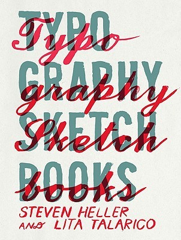

Princeton Architectural Press, 2011
Typography Sketchbooks
Steven Heller & Lita Talarico
Princeton Architectural Press, 2011
Graphic Design
368 pages
Typography the design of letters is at the heart of visual communication and graphic design. No design is successful without successful typography.
An artful craft since the days of moveable type, today's digital designers have an unimaginable array of possibilities when it comes to choosing typefaces. Whether on paper, screen or in e-ink, legibility and expression are paramount.
Where do the best contemporary fonts come from, and who designed them? Fortunately for us, typography for most designers is an obsession, one of the purest forms of design, one that can always be improved and refined.